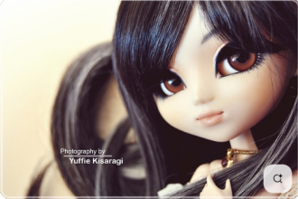
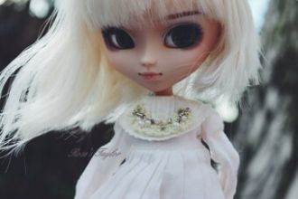

Даргонэ аба ла уршиЧина мурил ту. Чина муриДила ашала тихло виСар го ухэ ир ум цумли
Забыть невозможно касаний твоих,С тобою делила весь мир на двоих.Забыть и уйти, и всё отпустить -Просто порвать между нами нить.
If I gaze in your eyesI’d see the shore insideIf I could dare to tryI just might catch your eyeIf I was by your side
Я в твоих руках,Как маленький котёнок,Можешь за меня,Вершить мою судьбу,Или просто гладить,Или просто слушатьМеня,А я -
Хайр дэндүү их гэж үгүйгБидний өдрүүд надад хэлсэнХамт эсвэл үүрд ганцаарааИйм л хоёр сонголт өгсөн
Любви быстрокрылый век,Исчез, словно талый снег.Затих, как осенний сад,Его не вернуть назад.Не вернуть назад.
А на озері лотос квітне, квітне,Ти – моє бажання заповітнеА на озері лотос рожевіє,Від твого кохання шаленію.Від твого кохання шаленію.
Песни у людей разные,А моя одна на века.Звездочка моя ясная,Как ты от меня далека!
Laila, Laila, Laila, Laila, LaiLaila, Laila, Laila, Laila, Lai
Позвони, буду ждать.Дальше слово за тобой.Позови, и опятьУтечём простой водой.Ветер нас унесётДалеко на облака.А внизу — самолёт,
I wanna be with youIt's crazy but it's trueAnd everything I do, oh-ohI wanna be with you
You are..You areall I'll ever need.You're my everything!
You're my everythingThe sun that shines above youMakes the bluebird singThe stars that twinkle way up in the skyTell me I'm in love
Ρώτησε με ό,τι θες για την αγάπηΑν μετά από μας εκείνη θα υπάρχειΡώτησε με για τα σύνορα του κόσμουΓια τα δύσκολα που θες να μάθεις φως μου
Я встретил девушку полумесяцем бровьНа щечке родинка, и в глазах любовь.Ах, эта родинка меня с ума свела,Разбила сердце мне, покой взяла.
Play with it while you have handsDust settles, cities turn to sand Trespassing this is their landTime flies, make a statement, take a stand
В'ється, наче змійка, неспокійна річка,Тулиться близенько до підніжжя гір.А на тому боці, там живе Марічка,В хаті, що сховалась у зелений бір.

We've been living together but it couldn't be foreverWhy are you leaving me this wayI wanna give you devotion, let me feel your emotion
Эта улыбка, глазки и голос сердца сладкий -Не разгадать, но я люблю твои загадки.Мой мир, моя планета, мой тёплый лучик света!
За тысячу верст холода да вьюга,
Нам не хватает с тобой друг друга,
Молчи, ничего не говори -
Я знаю сама...